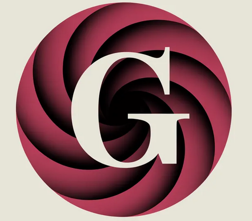
"Al menos se queda la experiencia." Estudiante.
|
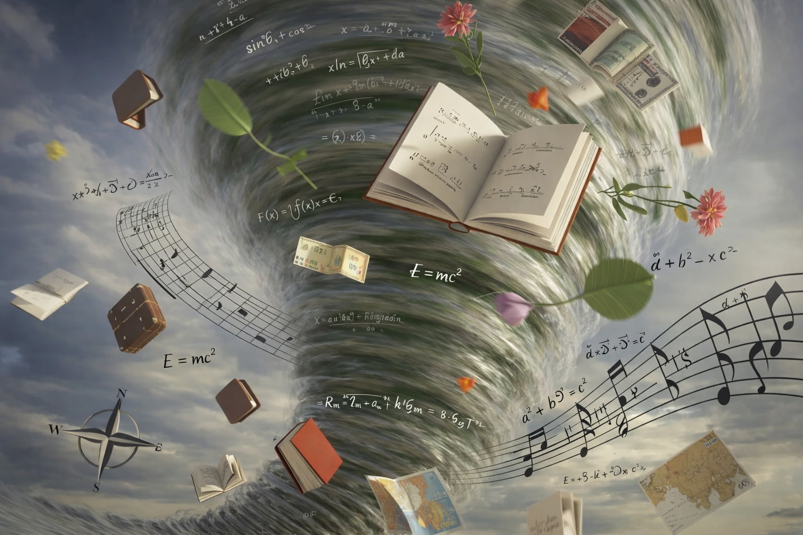 |
|
Soy estudiante de 2º de bachillerato de ciencias de la salud, también conocido como el bachillerato biológico. Mis intereses a niveles más serios los tengo un poco difusos
(por no decir mucho).
Tengo claro que quiero viajar, conocer gente y aprender sobre muchos ámbitos. De momento me estoy centrando un poco en la ciencia y sobre cual será el próximo paso. Pero antes por supuesto salir del mes de enero de una sola pieza (vamos perdiendo) y si es posible con todas las neuronas. Ultimamente me interesa la carrera de matemáticas y estoy investigando sobre ello pero no puedo evitar pensar que me viene grande, ya que actualmente para sacar notas altas le tengo que dedicar muchas horas, a veces comprometiendo a otras asignaturas. Sin embargo tengo claro que en algún momento me gustaría cursarla. Por lo tanto el dilema del futuro no desaparece y da miedo, como un huracán ;). |
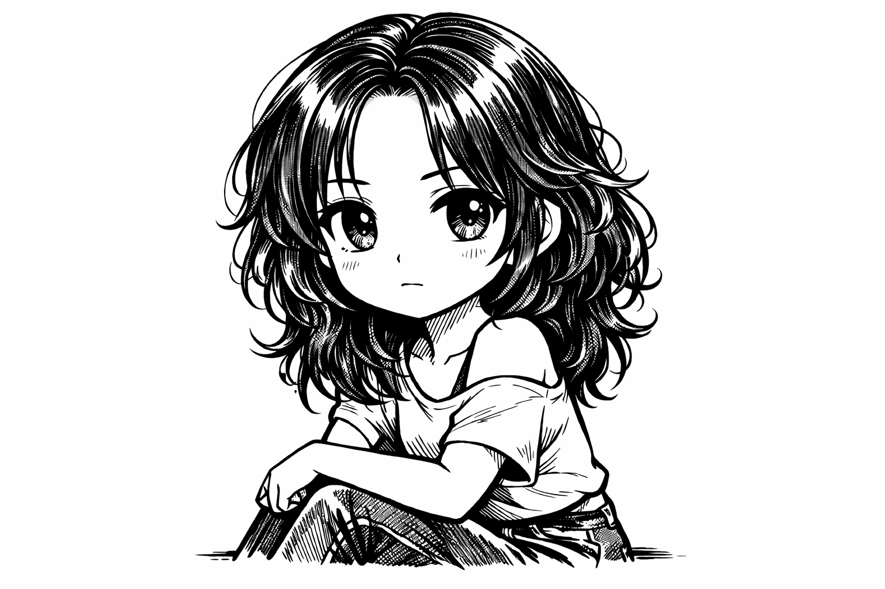 |
|
En mi tiempo libre (el que no tengo) me gusta:
|
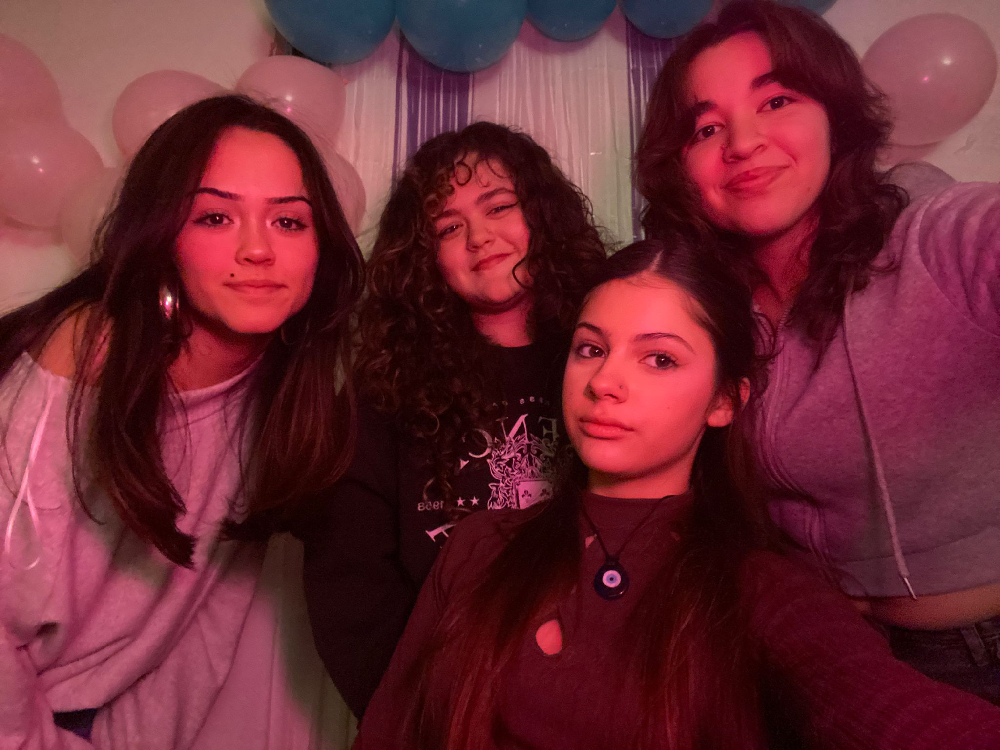 |
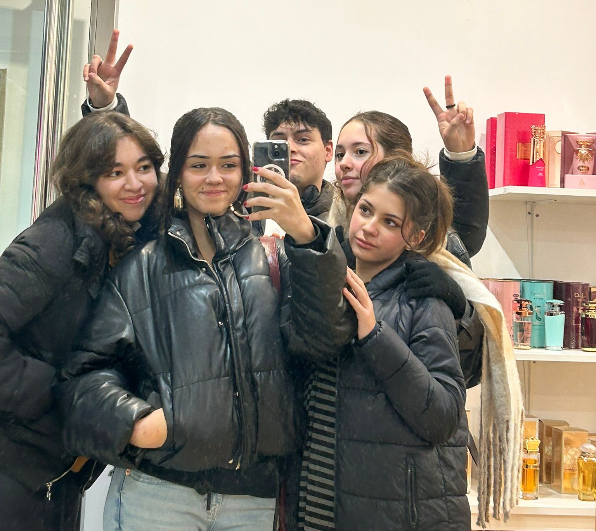 |
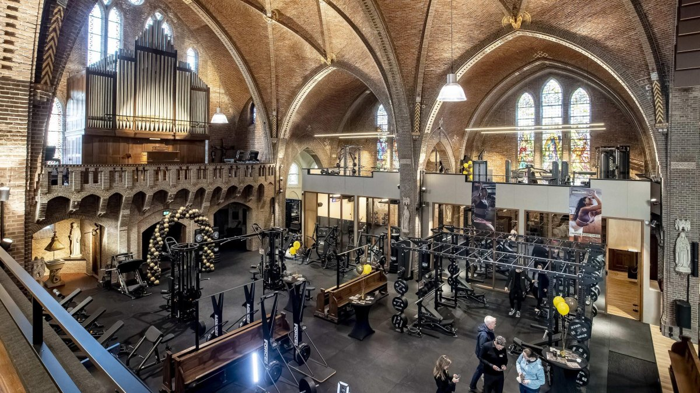 |
|
|
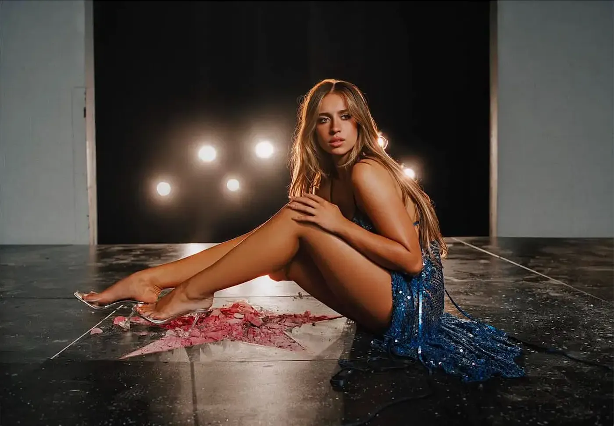 Tate Mcrae |
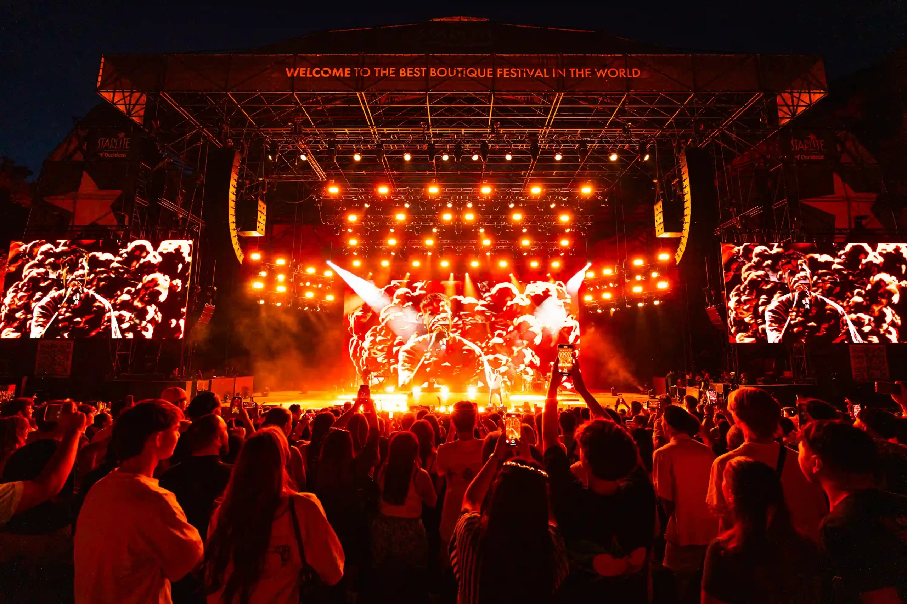 Duki |
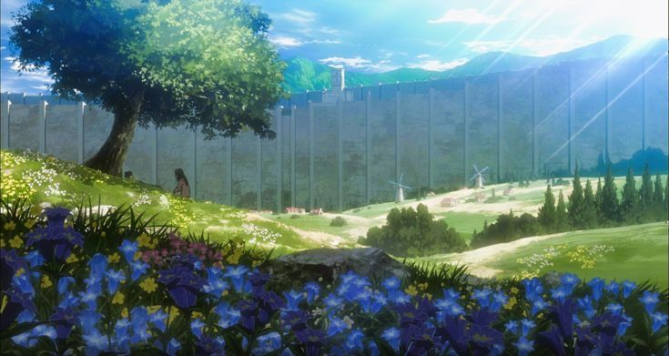 Attack on titan |
He trabajado en algunos proyectos relacionados con el instituto:
|
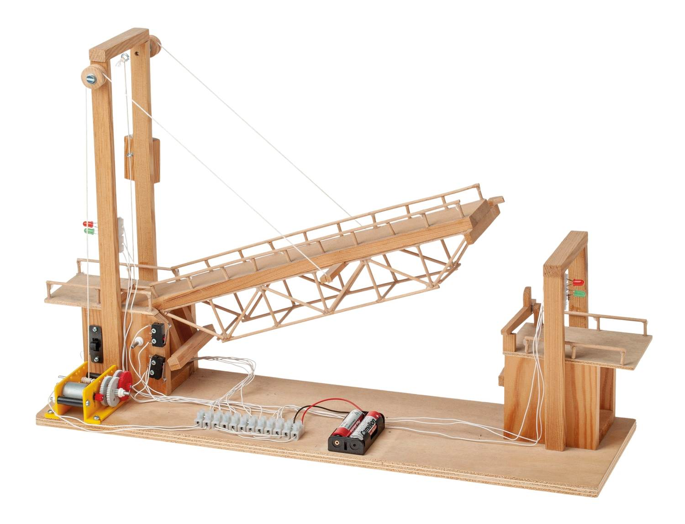 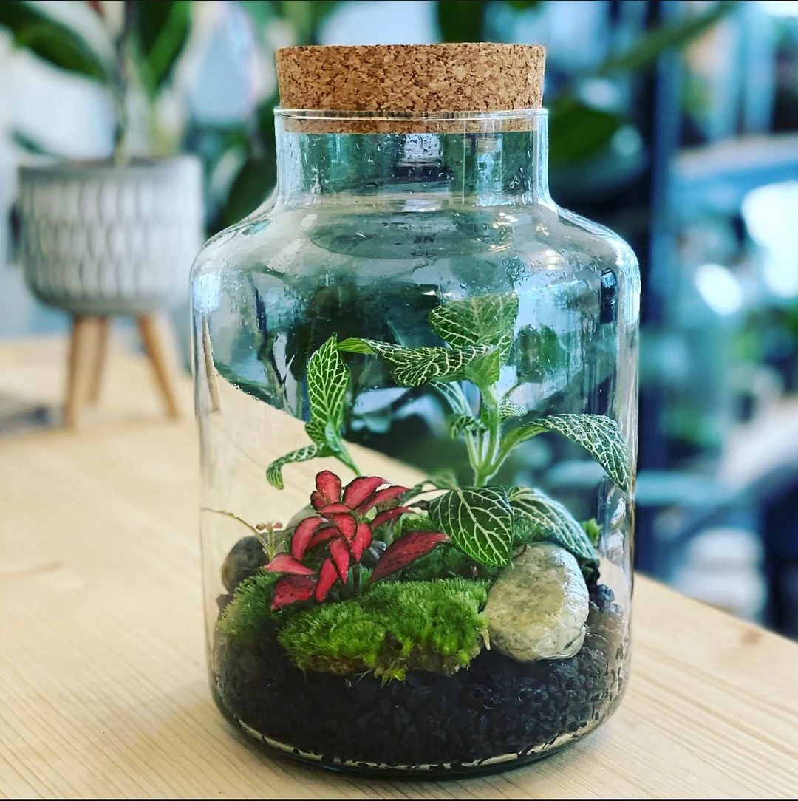 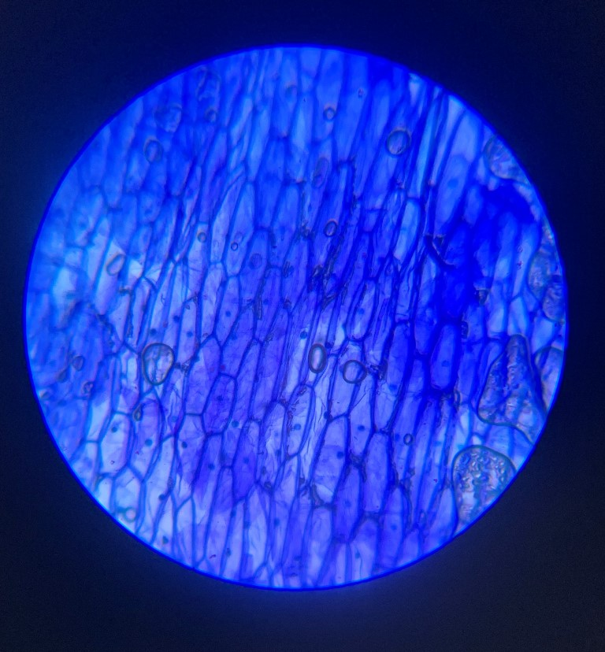 |
A nivel personal he sido ganadora provincial del certamen literario celebrado duarante la feria del libro anual del año 2024, con un relato sobre la inteligencia artificial,
enfocadolo al impacto de esta en las emociones humanas en un espacio futurista.
Para más información del evento en general visita
el enlace de la feria 2026.
Me gustaría que fuese una afición que siga desarrollándose y en el futuro que tome la forma de una obra propiamente dicha.